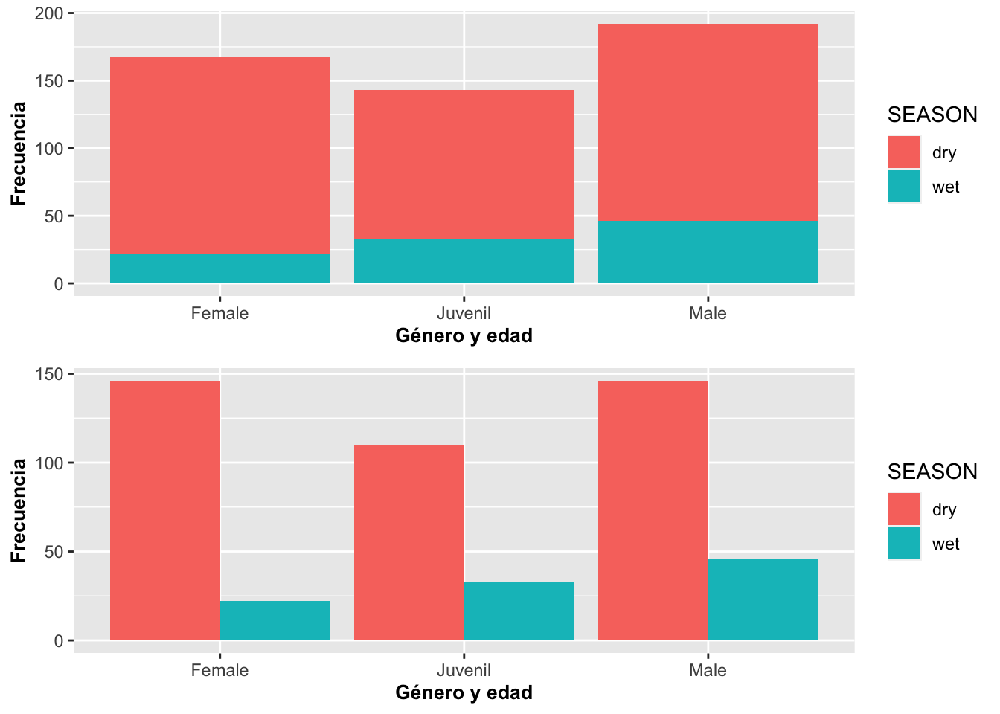

Gráficos de barras con geom_bar
Fecha de la ultima revisión
## [1] "2020-08-27"## ── Attaching packages ──────────────────────────────────────────────────────── tidyverse 1.3.0 ──## ✓ ggplot2 3.3.2 ✓ purrr 0.3.4
## ✓ tibble 3.0.3 ✓ dplyr 1.0.2
## ✓ tidyr 1.1.1 ✓ stringr 1.4.0
## ✓ readr 1.3.1 ✓ forcats 0.5.0## ── Conflicts ─────────────────────────────────────────────────────────── tidyverse_conflicts() ──
## x dplyr::filter() masks stats::filter()
## x dplyr::lag() masks stats::lag()Una variable discreta: Gráfico de barras con geom_bar
El gráfico de barras es una representación de la frecuencia de ocurrencia de eventos para valores discretos; por ejemplo, sí o no, o valores categóricos. La función geom_bar genera un gráfico que tabula la cantidad de veces que ocurre un evento. La altura de las barras representa el número de observaciones de una categoría discreta representada en el eje de X.
En el siguiente ejemplo, primero removeremos los NA del archivo usando drop_na(), es el función que excluye todas las filas que contienen los NA. Nuevamente utilizaremos el archivo de datos de la Dipodium rosea:
# DW$Number_of_Flowers # Antes de hacer los análisis mira los datos, y vea que hay muchas filas con **NA**, remueve **#** para activar la función.
# Method 1
DW %>%
drop_na(Number_of_Flowers)%>%
ggplot(aes(Number_of_Flowers))+
geom_bar(fill="red",color="white")+
xlab("Cantidad de Flores")+
ylab("Frecuencia")+
theme(axis.title=element_text(size=14,face="bold"))Cambio de intensidad de color con alpha
Se puede cambiar la intensidad del color de las barras usando alpha. los valores pueden variar de 0 a 1, donde 1 es mas intenso el color, aquí se utiliza un alpha=0.3.
b=ggplot(DW[!is.na(DW$Number_of_Flowers),],
aes(Number_of_Flowers))
b+geom_bar(alpha=.3,
fill="blue",color="white")+
xlab("Posiciones de las flores \n en la inflorescencia")+
ylab("Frecuencia")+
theme(axis.title=element_text(size=14,face="bold"))
Multiples grupos
Ahora le añadiremos una variable discreta que representa las frecuencias de las plantas con frutos y la frecuencia de plantas sin frutos para las posiciones de la flor en la inflorescencia. En el script se observa que la variable Frutos_si_o_no se identifica como un factor. Esto es necesario porque en el archivo de datos la presencia de frutos y flores fue identificada como 1 o 0 o sea valores numéricos. Si se hubiera identificado como Sí o No, no habría la necesidad de identificar que es un factor. En tal caso, es necesario identificar que estos valores son una categoría usando factor. El gráfico presenta las variables discretas una sobre la otra. Note en la Figura al igual que con geom_histogram, la frecuencia del segundo grupo es añadida a la frecuencia del primer grupo.
DW%>%
select(Fruit_position_effect,Frutos_si_o_no )%>%
drop_na(Fruit_position_effect)%>%
ggplot(aes(Fruit_position_effect))+
geom_bar(aes(fill=factor(Frutos_si_o_no)),color="white")+
xlab("Posiciones de las flores en la inflorescencia")+
ylab("Frecuencia")+
theme(axis.title=element_text(size=14,face="bold"))Posicionar las barras uno al lado del otro
Para presentar los grupos uno al lado del otro se usa el parámetro position =“dodge”, lo que hará que cada grupo quede posicionado contiguamente. Además, removeremos la leyenda con guides(fill=FALSE) como se muestra a continuación con los datos de la Dipodium rosea:
DW%>%
select(Fruit_position_effect,Frutos_si_o_no )%>%
drop_na(Fruit_position_effect)%>%
ggplot(aes(Fruit_position_effect))+
geom_bar(aes(fill=factor(Frutos_si_o_no)),color="white",
position = "dodge")+
xlab("Posiciones de las flores en la inflorescencia")+
ylab("Frecuencia")+
guides(fill=FALSE)+
theme(axis.title=element_text(size=14,face="bold"))
Posicionar las barras una encima de la otra
En el próximo gráfico, la frecuencia de ambos grupos comienza en cero pero aún saldrán sobrepuestos uno al otro usando position=identity
DW%>%
select(Fruit_position_effect,Frutos_si_o_no )%>%
drop_na(Fruit_position_effect)%>%
ggplot(aes(Fruit_position_effect))+
geom_bar(aes(fill=factor(Frutos_si_o_no)),color="white",
position = "identity")+ # Para que cada grupo comience en cero
xlab("Posiciones de las flores en la inflorescencia")+
ylab("Frecuencia")+
guides(fill=FALSE)+
theme(axis.title=element_text(size=14,face="bold"))
Porcentaje porporcional a todos los valores
Para mostrar el porcentaje de cada uno de los grupos, tenemos que usar una fórmula para calcular la proporción por grupo usando y=(..count..)/sum(..count..). Así la suma de todas las barras equivale al 100%. Vemos que en las categorías altas (que aparecen más a la derecha en el gráfico) algunas barras están más anchas. Esto se debe a que, en el archivo de datos, para algunas de estas posiciones de las flores en la inflorescencia no hay información para la segunda especie (la que aparece en azul). Esto se puede resolver añadiendo la información en el archivo original.
fill=factor(Frutos_si_o_no)
DW%>%
select(Fruit_position_effect,Frutos_si_o_no )%>%
drop_na(Fruit_position_effect)%>%
ggplot(aes(Fruit_position_effect))+
geom_bar(aes(y=(..count..)/sum(..count..),
fill=factor(Frutos_si_o_no)),
color="white", position="identity")+ # Para que cada grupo comience en cero
xlab("Posiciones de las flores en la inflorescencia")+
ylab("Frecuencia")+
guides(fill=FALSE)+
theme(axis.title=element_text(size=14,face="bold"))
Porcentaje por valos de cada X
Para que cada barra represente el 100% de los grupos en el eje de X, se usa el parámetro position=“fill”. En el siguiente ejemplo se le añade la variable discreta en este caso; o sea, si la planta tiene frutos (verde) o no (rojo). Ecologicamente se observa que la posición de las flores arriba (>27) en la inflorescencia resulta en menos frutos porcentualmente que las posiciones más abajo.
## Loading required package: scales##
## Attaching package: 'scales'## The following object is masked from 'package:purrr':
##
## discard## The following object is masked from 'package:readr':
##
## col_factorDW%>%
select(Fruit_position_effect,Frutos_si_o_no )%>%
drop_na(Fruit_position_effect)%>%
ggplot(aes(factor(Fruit_position_effect),
fill=factor(Frutos_si_o_no)))+
geom_bar(aes(y=(..count..)/sum(..count..)),
position="fill")+
xlab("Posiciones de las flores en la inflorescencia")+
ylab("Proporción")+
guides(fill=FALSE)+
theme(axis.title=element_text(size=10,face="bold"))
Reordenar las barras con geom_bar
En el siguiente gráfico, reordenamos la secuencia en X por orden del número de flores y su frecuencia. Primero, hay que crear una función para reordenar la variable, la que llamaremos reorder_size. El segundo paso es invocar esta función desde ggplot. La función es aplicable a cualquier variable que uno quisiera ordenar y tener como factor. En la figura podemos observar que en el muestreo hay solamente una planta con la siguiente cantidad de flores (1, 3, 4, 7, 8, 34, 36, 37, 43; extremo izquierda), y hay 13 plantas con 23 flores (extremo derecha) y otras frecuencias de plantas con diferentes cantidades de flores entre medio.
# Aquí se crea una función para re-ordenar la variable X.
reorder_size <- function(x) {
factor(x, levels = names(sort(table(x))))
}
DW%>%
select(Number_of_Flowers )%>%
drop_na(Number_of_Flowers)%>%
ggplot(aes(reorder_size(Number_of_Flowers)))+
geom_bar(fill="olivedrab")+
scale_y_continuous(breaks=c(0:13))+
labs(y="Número de plantas con la cantidad de flores", x="Cantidad de flores \n en la inflorescencia")+
theme(axis.title=element_text(size=10,face="bold"))Pirámides poblacionales con geom_bar
Un ejemplo interesante de geom_bar es cuando creamos pirámides poblacionales. Para el próximo ejemplo utilizaremos datos del censo de la base de datos de la Oficina del Censo de los EE. UU. ({US Census}) del 2015 sobre la población de Puerto Rico. Los datos representan la cantidad de mujeres en azul y hombres en rojo en categorías de edad; o sea, de 0 a 4 años, de 5 a 9 años y así sucesivamente. La última categoría incluye todos los puertorriqueños de 85 años o más. Para producir este gráfico, se generarán dos geom_bar uno al lado del otro; uno con los datos de Mujer (derecha) y otro con los datos de Hombre (izquierda).
Para especificar que se usen solamente los datos de un subgrupo de cada variable, se hace de la misma manera que en R; o sea,
subset(Pop_PR,Pop_PR$Sexo=="Mujer") También note que tenemos datos a la izquierda y a la derecha del valor de cero. Se produce este patrón usando {-Valor} en uno de los grupos, donde el valor es el tamaño poblacional por grupo de edad. Por último, se tiene que añadir coord_flip() para que las barras queden de forma horizontal.
## Sexo Valor Edad
## 1 Hombre 89507 0
## 2 Hombre 102622 5
## 3 Hombre 112350 10
## 4 Hombre 124179 15## Sexo Valor Edad
## 33 Mujer 87289 70
## 34 Mujer 65082 75
## 35 Mujer 46233 80
## 36 Mujer 47803 85ggplot(data=Pop_PR) +
geom_bar(aes(Edad,Valor,group=Sexo,fill=Sexo),
stat = "identity",
subset(Pop_PR,Pop_PR$Sexo=="Mujer")) +
geom_bar(aes(Edad,-Valor,group=Sexo,fill=Sexo),
stat = "identity",
subset(Pop_PR,Pop_PR$Sexo=="Hombre")) +
scale_y_continuous(breaks=seq(-140000,140000,40000),
labels=abs(seq(-140000,140000,40000))) +
coord_flip()+
ylab("Tamaño poblacional")+
theme(axis.title=element_text(size=10,face="bold"))
Si no se le añade coord_flip(), el gráfico quedará representado con las barras de forma vertical (o en columnas).
## [1] Hombre Mujer
## Levels: Hombre Mujerggplot(data=Pop_PR) +
geom_bar(aes(Edad,Valor,group=Sexo,fill=Sexo),
stat = "identity",
subset(Pop_PR,Pop_PR$Sexo=="Mujer"))+
geom_bar(aes(Edad,-Valor,group=Sexo,fill=Sexo),
stat = "identity",
subset(Pop_PR,Pop_PR$Sexo=="Hombre")) +
scale_y_continuous(breaks=seq(-140000,140000,40000),
labels=abs(seq(-140000,140000,40000))) +
ylab("Tamaño poblacional")+
theme(axis.title=element_text(size=10,face="bold"))
Patrones de temperatura en tiempo con geom_bar
Este tipo de representación puede ser efectiva para mostrar patrones en donde los valores son negativos y positivos; por ejemplo, la temperatura. Para demostrarlo, ahora daremos un ejemplo que proviene del pueblo de Asbestos, Quebec, Canadá. Los datos fueron extraídos de la base de datos de http://climate.weather.gc.ca/historical_data/search_historic_data_e.html (identifier 7020360). El archivo de datos contiene la temperatura promedio (por mes) de la máxima y la mínima del 1948 al 1987. Seleccionaremos solamente un conjunto limitado de los datos del año 1963 al 1968. Además, tendremos que voltear la información alrededor del eje de X para que se pueda leer, tal como se demuestra en la Figura. El primer paso es identificar que la variable Fecha es de tipo dato secuencial fecha y tiempo. El segundo paso es identificar si los valores de temperatura máxima están por debajo o por encima del punto de congelación, < 0C°, o > 0C°, creando una nueva columna que aquí llamamos NegPos. El tercer paso es usar solamente un subgrupo de información del archivo para mejorar la representación, ya que este tiene datos del 1948 al 1987. Se seleccionan los años 1963 al 1966.
Primero miramos los datos
## [1] "Year" "Mes" "Temp_Prom_Max" "Temp_Prom_Min"
## [5] "Fecha"## Year Mes Temp_Prom_Max Temp_Prom_Min Fecha
## 1 1948 6 22.2 9.9 1948-06
## 2 1948 7 25.5 14.2 1948-07
## 3 1948 8 24.9 14.2 1948-08
## 4 1948 9 21.6 8.4 1948-09
## 5 1948 10 12.0 2.6 1948-10
## 6 1948 11 10.3 1.9 1948-11## [1] TRUEIdentificar que la variable “Fecha” es una variable de tiempo. En modulo habrá una sección que discute solamente de fechas y horas.
Crear la nueva variable Temp_Prom_Max;
Aquí se crea una nueva columna con para identificar si los datos son positivos o negativos, si es positiva = “TRUE”, si es negativa = “FALSE”.
Selecionar solamente un subgrupo de los datos
Uniendo las partes para crear el gráfico
ggplot(data=ASBESTOSsub,
aes(x=Fecha, y=Temp_Prom_Max, fill=NegPos)) +
geom_bar(stat = "identity", position="identity")+
theme(axis.text.x=element_text(angle=90))+
guides(fill=FALSE)+
xlab("Fecha")+
ylab("Temperatura promedio máxima por mes en Celsius")+
theme(axis.title=element_text(size=10,face="bold"))## Warning: Removed 2 rows containing missing values (geom_bar).
Gráfico de barras: Ajuste de posiciones con geom_bar
A veces queremos hacer que las barras luzcan de diferentes maneras; por ejemplo, que las posiciones de las barras no salgan verticales o tan gruesas. Además, se puede modificar la representación de las barras para que la altura de ellas no represente el número de observaciones; por ejemplo, que represente una suma sobre otra variable.
Los datos que utilizaremos para la próxima demostración provienen del archivo de lagartos Anolis que contiene información sobre su edad, sexo, periodo de muestreo y localidad donde fueron muestreados.
## [1] "STUDY" "Survey_Site"
## [3] "LOCATION" "TIME"
## [5] "DATE" "SEASON"
## [7] "SPECIES" "SEX_AGE"
## [9] "HEIGHT" "DISTANCE_FROM_CENTERLINE"
## [11] "PERCH_SUBSTRATE" "PERCH_DIAMETER"
## [13] "WEIGHT" "SVL"
## [15] "TAIL"El primer gráfico a continuación, produce por omisión barras negras que representan la suma de la cantidad de observaciones.
barraA=ggplot(Anolis, aes(SEX_AGE))
barraA+geom_bar(fill=grey(.3))+
theme(axis.title=element_text(size=14,face="bold"))
En el segundo, el ancho de las barras fue reducido para que se vean menos angostas usando la opción width, ene ejemplo se reduce el ancho de las barras width=.3. Además, se cambia la descripción de los ejes al castellano. También selecciono un otro color de gris y se modifico su intensidad con fill=grey(.5).
barraA=ggplot(Anolis, aes(SEX_AGE))
barraA+geom_bar(width=.3, fill=grey(.5))+
labs(y="Frecuencia", x="Género y edad")+
theme(axis.title=element_text(size=10,face="bold"))
En el tercer grafico las barras fueron rotadas usando la opción coord_flip() y puestas sobre lo que antes era el eje de Y. En el cuarto, se añadió una variable discreta como color; en este caso, fue usada la escala de color gris para distinguir entre la temporada seca dry la lluviosa wet. Si no se añade la opción scale_fill_grey(), las categorías tendrían color.
barraA=ggplot(Anolis, aes(SEX_AGE))
barraA+geom_bar(fill=grey(.5))+coord_flip()+
labs(y="Frecuencia", x="Género y edad")+
theme(axis.title=element_text(size=10,face="bold"))
barraA=ggplot(Anolis, aes(SEX_AGE, fill=SEASON))
barraA+geom_bar()+scale_fill_grey()+
labs(y="Frecuencia", x="Género y edad")+
theme(axis.title=element_text(size=10,face="bold"))### Posiciones d elas barras
Si uno quiere posicionar las categorías una al lado de la otra, se usa (position={dodge}). El parámetro dodge le indica esquivar en el sentido de mover al lado.
barraA=ggplot(Anolis, aes(SEX_AGE,fill=SEASON))
barraA+geom_bar()+
labs(y="Frecuencia", x="Género y edad")+
theme(axis.title=element_text(size=10,face="bold"))
Opciones y Parametros de geom_bar:
- ggplot(el archivo de datos, aes(la variable continua))
- geom_bar(stat=bin, x, y, alpha, color, fill, linetype, size)
- alpha: la intensidad del color
- fill: el color de la barra
- color: el color de la línea alrededor de la barra
- linetype: representa el estilo de línea
- size: representa el grosor de la línea
- weight; para modificar el valor original; entonces no sería, por ejemplo, el conteo/suma de los valores si no un valor ponderado (promedio ponderado).